Нерівності, що містять sin(x), cos(x), tg(x), ctg(x) з однієї
сторони від знаку нерівностей (≥ ,>, ≤ ,<) називають
найпростішими тригонометричними нерівностями. Якщо маємо знаки
< або > то нерівність називається строгою, якщо
≥ або ≤ то нерівність є нестрогою.
Розв'язати тригонометричну нерівність означає знайти множину значень аргументу "ікса", включаючи періодичність функцій, при яких виконується нерівність.
Важливо, щоб в синусах та косинусах права сторона за знаком нерівності
не перевищувала за модулем одиниці. Інакше виходимо за межі ОДЗ
цих функцій і такі нерівності не мають коренів. Тому спершу перевіряємо
область допустимих значень, а далі розв'язуємо нерівність.
Тангенс та котангенс не потрібно перевіряти на ОДЗ оскільки вони
приймають як завгодно як великі, так і малі значення.
Однак, вони мають розриви в точках вертикальних асимптот, що призводить
до скорочення інтервалу розв'язків.
Під складними тригонометричними нерівностями мають на увазі такі,
де аргумент міститься під модулем, коренем квадратним,
з множником або ж маємо комбінацію тригонометричних функцій чи над нею
виконуються певні дії (модуль, квадрат, корінь і т.д.)
Алгоритм розв’язування нерівностей sin 𝑥 < 𝑎,sin 𝑥 > 𝑎 , |𝑎| < 1
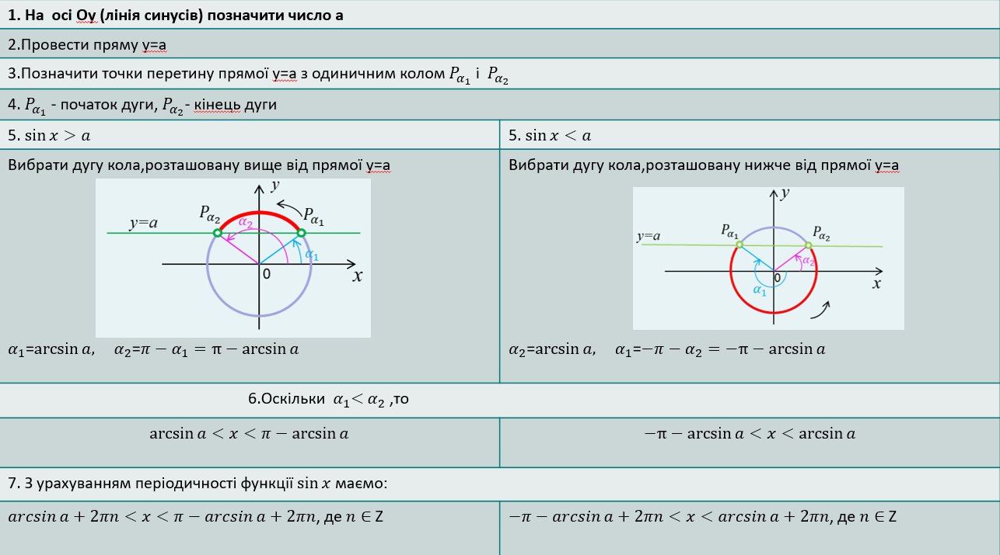
Алгоритм розв’язування нерівностей cos 𝑥 < 𝑎,cos 𝑥 > 𝑎 , |𝑎| < 1
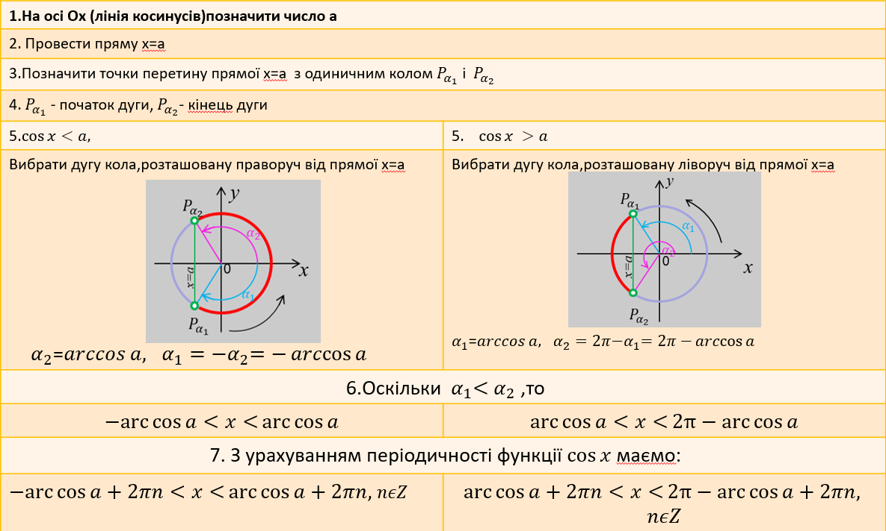 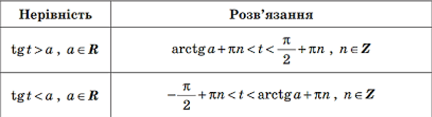 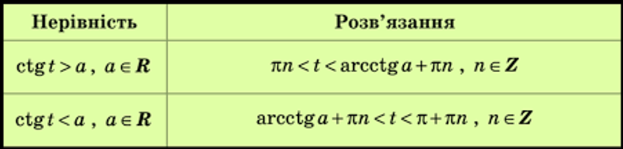
Приклади
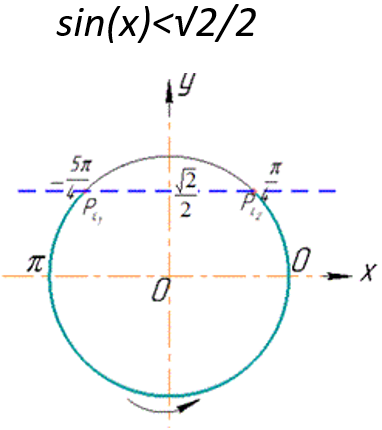
Розв’язання:
Побудуємо одиничне коло, пряму y=√2/2 і позначимо точки Px1 і Px2 перетину одиничного кола й зазначеної прямої
та виділимо множину точок, ординати яких менші √2/2.
x1 і x2, здійснюючи обхід дуги проти годинникової стрілки:
x1 < x2,
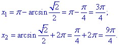
Отже, 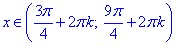
2Пі є періодом для синуса y=sin(x), тому при додаванні або відніманні на це число множина розв'язків нерівності не зміниться)!
Відповідь: 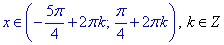
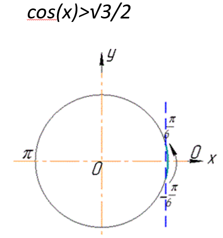
Розв’язання:
Оскільки |√3/2|≤1, то розв'язок нерівності існує. Побудуємо одиничне коло,
пряму х=√3/2 і позначимо точки перетину одиничного кола й зазначеної прямої та виділимо множину точок,
ординати яких більші √3/2. Знайдемо значення кутів x1 і x2, здійснюючи обхід дуги проти годинникової стрілки:
x1 < x2
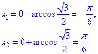
Відповідь: 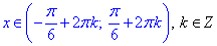
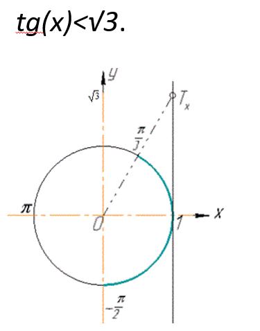
Розв’язання:
Побудуємо одиничне коло, лінію тангенсів, на якій позначимо точку Tx(1;√3) і виділимо ту частину лінії тангенсів,
яка розміщена нижче точки Tx та дугу кола, яка відповідає виділеній частині лінії тангенсів.
Запишемо значення кутів, які відповідають виділеній дузі:-Pi/2 < x < arctg(√3), або –Pi/2 < x < Pi/3.
Запишемо відповідь, врахувавши періодичність y=tg(x).
Відповідь: 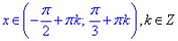